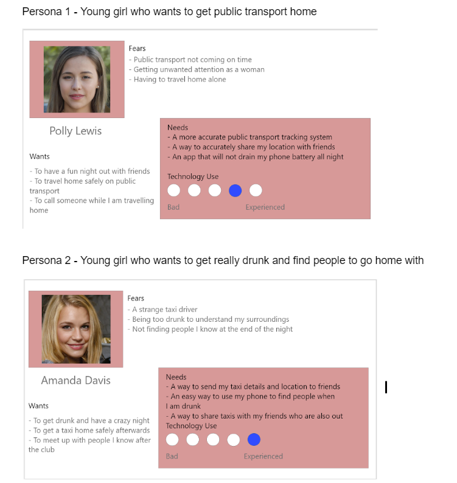

Final Year Individual Project - Female Safety App
Time Scale : 1 year
Key Skills : UXD, User Journey Maps, Personas, User Research and Testing, Wireframing, Branding and Prototyping in Adobe XD
Desk Based and User Research
After initial brainstorms, I did some research over the summer and decided on which idea I thought I could do the most with. I decided on my Safety App design project as I really liked the concept and after deciding a career in UX Design is something that I was most interested in, thought this project would demonstrate my skills best. I then began to develop some sketches about what I thought the app could look like, as well as taking my initial user research and creating some early user personas. During the first two terms of final year, I mainly focused on the user research portion of the project, as this is key to the development of my app. As this project had a longer time scale than others I have completed, I was able to carry out much more effective and in depth user research than before. I started off by sending out some generic Google Form surveys to grasp an idea of what my target audience thought of relating topics. I then took these to develop an app feature list as well as initial user journey maps and wireframes. I then moved onto asking about branding and colours, as these are just as important when creating a new app. I completed some user testing where I designed a list of scenarios and then observed my users as they used the app to work through the situations. This user testing was very beneficial to the project as I was able to observe interactions with my prototype and also ask users for feedback on the usabiltiy. After completing several different rounds of testing, in different situations such as day vs night, I was able to make the final edits to my app.

Wireframing and Prototyping
During this process I was also able to develop my wireframing and prototyping skills. Alongside the user research I was able to adapt my initial ideas and sketches into basic wirframes on XD and then into the fully fledge prototype. This fully functioning prototype used a variety of the different Adobe XD functions such as components and animations to give a full impression of a working product.